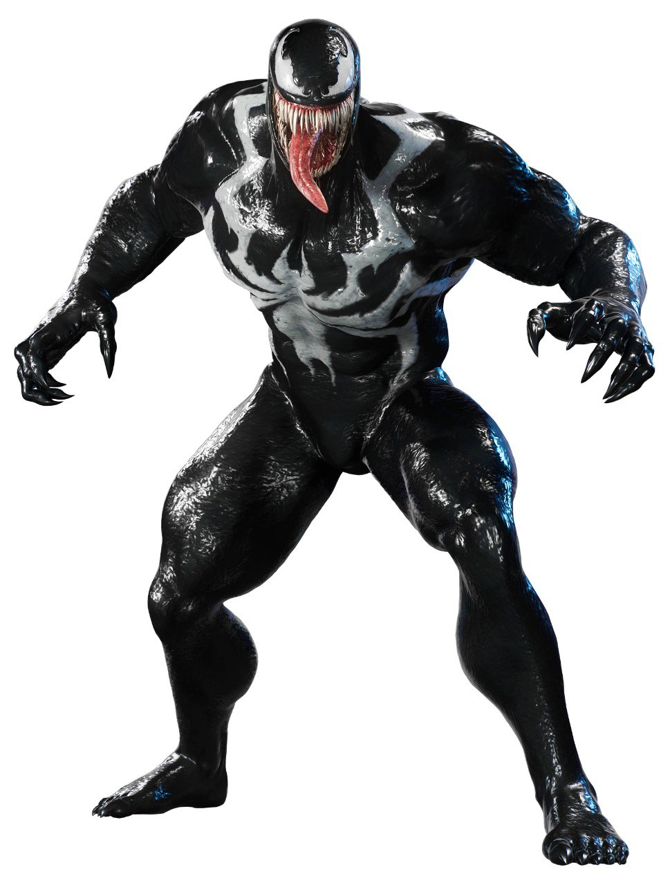

About Venom
Venom is one of Marvel’s most iconic anti-heroes, first appearing in 1988. A symbiotic alien lifeform, Venom bonds with hosts—most famously Eddie Brock— granting them incredible powers. Known for his menacing look, sharp teeth, and dark sense of justice, Venom stands between hero and villain.
Major Appearances
- 1988 – First appearance in The Amazing Spider-Man #300.
- 1993 – Solo comic series "Venom: Lethal Protector."
- 2007 – Film debut in "Spider-Man 3."
- 2018 – Standalone movie "Venom."
- 2021 – Sequel "Venom: Let There Be Carnage."
Powers & Abilities
- Superhuman strength and speed
- Shapeshifting abilities
- Web-like tendrils
- Healing factor
- Immunity to Spider-Man’s spider-sense
Portrait
Learn More
Visit Venom’s Wikipedia Page or explore Marvel’s Official Page.
Learn More